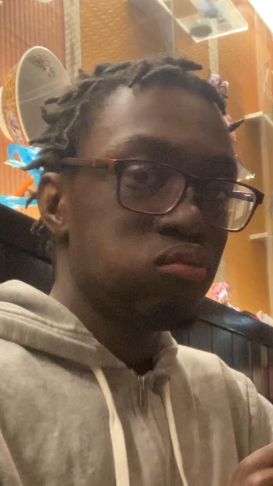

A webpage focusing on extinct animals may seem rather strange, but
can be important for understanding the importance of a well balanced
ecosystem. This site is dedicated to exploring the legacy of the
dodo bird, one of history’s most iconic extinct animals. The dodo's
story is a powerful reminder of how human impact can alter the
course of nature. By studying a species who went extinct nearly 400
years ago, we gain important insight into the fragile balance of the
ecosystem, and learn how we can preserve endangered animals today.
Understanding extinction helps us to prevent it from repeating. Join
us in honoring the past to safeguard the future.
Meet the Team!
Charly Rivera
The Dodo bird's extinction is a reminder that discovery
without responsibility can lead to destruction.

Bilal Burton
As a digital artist, the dodo’s story captivates me.
Smedly Moise
I got involved because I wanted to make learning about the
dodo fun. Along the way, I discovered all kinds of cool
facts, like how Kevin from "Up" was a dodo, and I never
knew!
Emmanuel Ruiz
I always thought of the Dodo Bird as a bit of a joke growing
up. Getting to learn more about it allows me to see it in a
new light!